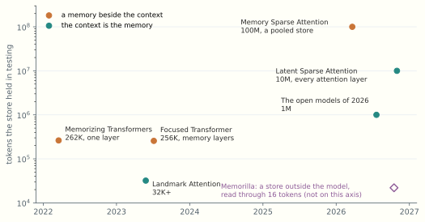
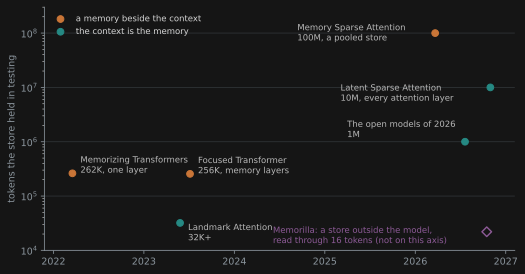
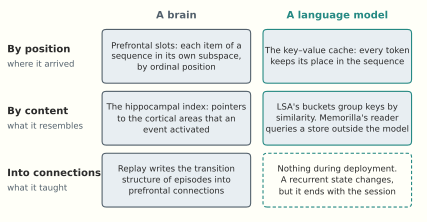
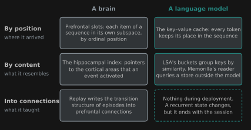

How LLMs Could Place Explicit Memories
From Memorizing Transformers to Latent Sparse Attention, and the placement neither has
In December 2021 I sent Markus Rabe a short note. I was attending, online, the weekly reading group that Christian Szegedy ran, and as I recall the group had been discussing the work on memory that Rabe, Szegedy and two colleagues would post three months later. The note built on that work:
Can we synthesize scratchpads using the dataset-rearrangement-by-memory-retrieval idea? If we iteratively fine-tune a language (decoder) model on the rearranged dataset, the model learns to predict the retrieval inserts. To get this effect to work, we should not penalize inserts if the predictions following them are successful. Emergent scratchpad behavior!
The proposal had two halves. Train a model on text interleaved with what a retriever would have fetched, and the model starts to produce that material itself. Spare the material that helped with what came next, and the model starts to keep notes. The note also asked whether, given the right curriculum, such a model would invent the right-to-left school algorithm for long multiplication or the left-to-right expert one, a contrast taken from a study in the ACT-R cognitive architecture.
The paper appeared in March 2022 as Memorizing Transformers, by Yuhuai Wu, Markus Rabe, DeLesley Hutchins and Christian Szegedy. Its abstract opens with a wish: “Language models typically need to be trained or finetuned in order to acquire new knowledge, which involves updating their weights. We instead envision language models that can simply read and memorize new data at inference time, thus acquiring new knowledge immediately.”
Four years later that wish has been granted at a scale nobody then proposed. In October 2026, Latent Sparse Attention read ten million tokens with a fixed number of keys per query. Earlier the same month, Memorilla gave a frozen model a persistent store of documents, read through sixteen tokens.
This essay follows that line and asks where a language model should place what it reads. A memory can be placed by position, where it arrived; by content, what it resembles; or into connections, what it taught. Every Layer a Store described the stores of the 2026 models, and Filling the Stores described how they are trained. Here the subject is explicit memory: facts and episodes that a model should be able to find again. The line traced here is one of ideas, not of citations. Latent Sparse Attention cites none of the 2022 and 2023 papers below, and Memorilla comes from a different literature altogether.
1. A memory beside the context
Memorizing Transformers added one thing to a transformer: a layer that could read a long record of its own past. The main runs used the ninth of twelve layers. Each head of that layer kept the most recent (key, value) pairs of the document, up to a size M, and the record was cleared when a new document began. For each query the layer found the 32 most similar keys by approximate nearest-neighbour search and attended to those alone. A learned scalar for each head mixed this read with ordinary local attention.
Three of its design choices set the terms for everything after.
The memory was non-differentiable. In the paper’s words, “gradients are not backpropagated into the external memory”. Keys and values were stored as computed and never revisited, which the authors call “critical to the scalability of our technique”.
The memory held the model’s own representations. Earlier retrieval methods such as REALM and RAG fetched text from a corpus and put it in front of the model. kNN-LM and neural caches intervened at the output. Memorizing Transformers kept internal keys and values from the model’s own reading, so its retrieval was a form of attention. That branch is the one that survived.
The keys went stale. Because a long document spans many training steps, the query that reads a key is computed by newer weights than the ones that wrote it. The section of the paper on this problem is titled “Distributional Shift”. The authors normalized keys and queries, and they admit the limit of the fix: “Normalization does not eliminate staleness, but it at least ensures that older keys and newer keys do not differ in magnitude.” Training from scratch with a very large memory was sometimes unstable, so they pretrained with 8K and fine-tuned upward.
The results justified the machinery. Perplexity improved on all five corpora: web text, mathematics papers, books, code and formal proofs. It kept improving as memory grew to 262K tokens. At 1 and 8 billion parameters, an 8K memory matched a vanilla model about five times larger. A pretrained model fine-tuned to use memory closed 85 percent of the gap to one trained with it within 20,000 steps.
The gains concentrated on rare tokens: names, citations, function names. The Isabelle corpus of formal theories gave the clearest case. To name a lemma, the model often looked up its definition: “the model looked up the definition from earlier in the proof”. The authors checked ten such predictions by hand and found the needed body in eight. That is the explicit memory this essay is about, a fact the weights do not contain, found where it was written down.
2. Teaching the memory to ignore distractors
Scale brought a new failure. A nearest-neighbour memory works when the right key stands out, and as a store grows, more keys compete with it. Every Layer a Store treated long context as an interference problem in general. In 2023 the problem got a name and a training procedure.
Focused Transformer, by Szymon Tworkowski and colleagues, follows Memorizing Transformers in its memory layers (“we follow most of its design choices, except for the gating”) and calls the failure the distraction issue. Its remedy is crossbatch training. Each slot of a batch holds one document, and the memory layers attend, in a single softmax, to the current context, to the previous context of the same document, and to previous contexts of other documents in the batch. The other documents act as negatives. No separate contrastive loss is needed. The ordinary objective teaches the model to tell its own document’s keys from strangers’. With this procedure, 3B and 7B models handled passkey retrieval at 256K.
The group was also working, as I remember it, on retrieval-augmented training that used the batch contrastively; Focused Transformer, whose authors include Wu and which thanks Rabe and Szegedy, later published a method of that kind.
Landmark Attention, by Amirkeivan Mohtashami and Martin Jaggi, moved retrieval into attention itself. A landmark token represents each block of the context, and the model is trained so that attention to the landmarks selects blocks. Nothing outside the attention mechanism does the choosing. Unlimiformer made the same kind of change to an encoder–decoder, with a kNN index over encoder states inside cross-attention.
Rearranging datasets by retrieval also reached print that year, in two forms. In-Context Pretraining builds a graph of nearest-neighbour documents and walks it to produce a training order. SPLiCe uses retrieval “to collate mutually relevant documents into long and coherent training examples”. Both show that a model learns to use long context better when its training context is relevant. Neither lets the model decide what to insert, and neither spares an insert because it helped. That was the note’s second half.
By the end of 2023 the memory was turning into blocks of the context, read through attention, by a model trained to ignore the wrong blocks.
3. The memory is the cache
Over the next two years the memory became the cache, and the vocabulary followed. Methods such as Quest, InfLLM and MInference select blocks of the key–value cache by simple summaries of their keys, with no training at all. ClusterKV, RetrievalAttention, RetroInfer and IceCache organize the cache by content, through clusters, graphs or trees, at inference time. Reformer and the Routing Transformer had tried content addressing at short context years before.
Then labs built selection into the models. NSA, MoBA and DeepSeek Sparse Attention train it natively, and Every Layer a Store describes how the 2026 models use it. “A selector is a second, cheaper store placed in front of the first.” Filling the Stores records the newest case. Kimi K3.1 Pro’s post-training added indexers to a model released without them.
So the store is no longer beside the context, and the question has moved. Nobody is asking what to keep, because everything is kept. The question is what to read. The cost of answering it became the bottleneck. In the sparse attention of GLM-5.3-Flash, as the Latent Sparse Attention paper measures it, “at 10M tokens, 98% of the prefill time of a sparse attention layer is spent on indexing”. The indexer still scores every key, so sparse attention had made reading cheap and left finding expensive.
4. Ten million tokens
Latent Sparse Attention, by Ales Kubicek and colleagues at Prefrontal AI and ETH Zurich, with James Whittington as senior author, replaces that scan with an index. (Two other 2026 methods share the abbreviation: Meituan’s LongCat Sparse Attention and Lookahead Sparse Attention. Below, LSA means the Latent one.)
The keys are projected into a small latent space, normalized, pooled four at a time, and clustered bottom-up into buckets, each with a centroid and a list of key positions. A query scores centroids rather than keys, takes the best buckets, and attends to a fixed number of long-range keys, plus a few sink keys and a recent window. Flat search scores every bucket. Tree search descends a hierarchy of them, so a query scores O(\log T) centroids and prefill becomes subquadratic.
The distilled variant, D-LSA, retrofits a released model. On Qwen-3.8-27B at ten million tokens it scores 63.9 on RULER against 59.9 for full attention, and 29.1 against 19.8 on PaperTrail, a new benchmark. In one layer it runs 72 times faster than full attention in prefill and 42 times faster in decode. Served end to end on eight H200 GPUs, full attention takes 4,582 seconds to its first token at that length, about 76 minutes. D-LSA takes about 500.
The other test model gives a more sober picture. On GLM-5.3-Flash, D-LSA replaces DeepSeek Sparse Attention and trails it on RULER by up to about 8 points at 2 to 5 million tokens, and by 6 to 7 points on PaperTrail. Tree search, the part that makes the method subquadratic, loses accuracy faster than flat search past a million tokens (55.8 against 66.8 on RULER at ten million, on GLM). LSA makes finding cheap, and on one of two models it is as accurate as dense attention.
Nor is ten million the record. LSA’s own table lists HSA-UltraLong at 16 million, and Memory Sparse Attention, discussed in Section 6, reports 100 million.


Long-context attention is retrieval. The paper’s Appendix A runs an oracle on Qwen-3.8-27B at 128K, on RULER. “Top-k Oracle Attention keeps 98% of the RULER accuracy of Full Attention down to k = 512, while each query attends to 0.8% of the keys.” Each query also keeps a 4-token sink and a 512-token window, and one list of keys serves all heads. This is the empirical licence for the whole line: on this task, most of what attention reads, it does not need.
PaperTrail and the Isabelle lemma. PaperTrail plants a trail of fabricated facts in unseen 2026 arXiv papers and asks questions that connect them. It tests what Memorizing Transformers showed in Isabelle, the use of a fact met only in context. Because the facts are fabricated, recall cannot come from the weights.
The two ends of the line compare as follows.
| Memorizing Transformers (2022) | Latent Sparse Attention (2026) | |
|---|---|---|
| Store | a per-head cache beside the local context | the key–value cache itself |
| Read by | one layer, gated against local attention | every attention layer |
| Index | approximate kNN | hierarchical clusters in a learned latent space |
| Staleness | keys from older weights, in training | buckets fixed once built |
| Gradient into selection | none | none, or a KL target from a frozen model |
| Largest scale tested | 262K | 10M |
In both designs the weights learn nothing at test time. Both separate a store from an index over it, and the separation has survived every change around it. LSA’s authors state what it leaves undone: “LSA reduces the cost of finding the keys, but not of storing them, and the KV cache still grows linearly with the context.” The cache is also written in one model’s key space, and it ends with the session.
5. Who teaches the index
Filling the Stores explains why a selector needs a teacher and how retrofits like D-LSA get one. D-LSA’s indexer trains on 352 million tokens to match, by KL divergence, the attention of the frozen layer it serves, and nothing else in the model moves. The paper’s second version traces distilling from a trained model to Schmidhuber’s 1992 work on history compression. A native variant, N-LSA, needs no teacher: it clusters the attention’s own keys. A training-free variant of D-LSA uses the keys’ leading principal directions.
Who Teaches the Weights? set two conditions on a teacher: it must know more than the student, and its targets must be ones the student can absorb. The indexer meets both in a clean form. Dense attention knows more, because it has looked at every key. Its target is a ranking of clusters, which 64-dimensional projections can represent. The student never has to know what any key means, only where the teacher would look.
The training-free variant makes the same point from the other side. Retrieval needs little teaching once the model has learned its keys. Compare what it takes to teach content: Where Experience Goes showed fine-tuning fed hundreds of times its source text in generated inferences. Telling a model where to look is cheap. Teaching a model what it read is expensive.
6. Memory moves back out
Earlier in the same month as LSA, the memory left the context again.
Memorilla, by Adibvafa Fallahpour and colleagues at Stanford, Toronto, Penn and MIT, with Jure Leskovec, “separates persistent knowledge storage from the context required for each query”. A frozen embedding model encodes each chunk of a document collection once into a matrix on disk. For each query, a trained module of 194 million parameters conditions sixteen learned slots on the question and lets them cross-attend to every stored embedding. The authors call this “a continuous, query-conditioned read over all stored documents rather than a discrete top-k selection”. The slots are projected into the model’s input embedding space and placed ahead of the prompt. “No LLM layer or attention mechanism is changed.” The abstract uses this essay’s verb: the module “learns to retrieve and place query-specific information”.
Set beside LSA, it makes the opposite trade at almost every point.
| Latent Sparse Attention | Memorilla | |
|---|---|---|
| Store | the key–value cache | an embedding matrix outside the model |
| Written by | the model’s forward pass | a frozen encoder |
| Bound to one model | yes | the store no, the reader yes |
| Lasts | the session | across sessions |
| Read | sparse, hard selection, every attention layer | soft, over every document, once, ahead of the prompt |
| Fidelity | exact keys and values | “can lose fine-grained factual details” |
So 2026 does not end with memory settled inside the context. In the terms of Where Experience Goes, Memorilla is a new form of the ladder’s third rung, harness memory, held in latent vectors instead of text. LSA strengthens the first rung and Memorilla the third. Memory Sparse Attention from Evermind and Shanda, not to be confused with MiniMax’s method of the same initials, sits between them: a one-time offline pass over a corpus builds what the paper calls “a structured, retrievable latent store” in the model’s own key space, mean-pooled, and it reports less than 9 percent degradation up to 100 million tokens on MS MARCO, with a 4B model.
Retrieval, even if intelligent
Memorilla matters most as a test of a question left open by the continual-learning series. How far can retrieval go if the retriever is itself trained?
Further than the alternatives. On FactKG, RAG with 50 chunks falls from 78.73 to 51.75 percent as the claims compose one to four facts, while Memorilla stays in the 80s. (Part of that gap is evidence RAG never retrieves, but full context, which reads every chunk, also trails, 80.43 to 84.33.) On NarrativeQA it beats RAG on “why” and “how” questions, by 4.91 and 7.02 ROUGE-L points, and loses on “who” and “which” by 3.45 and 2.93, though the authors note that question type also varies with answer length and entity frequency. A compressed read keeps structure and loses names. The Isabelle lemma would not survive it.
The limit shows in what both methods miss. On PersonalizationV4, whose questions each require combining at least two persona facts, many of the shared failures “require linking facts that each appear somewhere in the user’s history, which suggests that the remaining errors come from combining information rather than from failing to find it”. Theory points the same way for hard selection: Eitan, Yehudai and Maron prove that top-\kappa access needs capacity growing as \sqrt{n} to compute even a composition of two functions, which a retrieval block with several hops avoids.
The reader is trained once and used for everyone. “Train and test users are disjoint on both, so one module serves every user and enrolling a new one requires only embedding their chats.” So its relational work happens at read time. It holds how to read, and nothing about any particular store. We return to what that implies in the next section.
Full context is not an upper bound
The paper’s most striking line concerns the baseline. Full context trails Memorilla on every benchmark except PubMedQA and on 20 of 21 metrics, “so supplying the entire collection hurts more often than it helps”. Recall that D-LSA beat full attention on Qwen at ten million tokens. Two unrelated designs reach the same finding from opposite sides: reading everything hurts. It is the distraction issue of 2023, still with us at the frontier, and it warns against treating a longer context as a free good.
The comparison needs its caveats. The module’s third training stage fine-tunes on “the training splits from all eight evaluation benchmarks”, with extra fine-tuning on the two personalization sets, and full context gets nothing comparable. The ablations do show the gains rest on stored evidence, since replacing documents with noise costs 5.93 points on FactKG, and a LoRA adapter of comparable size with no documents loses on every primary metric, on two of them within noise. The decoders are small, 4B and 8B. Prompts past 32,768 tokens need YaRN. Only one model family has been tested. The latency table measures the read as flat from one document to 512 (2.01 and 1.96 milliseconds). A soft read over every document must grow with the store eventually, which is our inference, and past that point an index of LSA’s kind would matter.
What “continual learning” means here
The paper’s second claim is that Memorilla “enables continual learning”. In TextWorld, a frozen Qwen3-4B agent receives eight memory vectors on top of its full history. Only the module is trained, by GRPO on game score. On held-out games, average success rises from 0.186 to 0.242, and the pass rate from 0.250 to 0.375, while an untrained module falls below the baseline.
Three facts limit this. The evaluation covers 40 prompts, so the pass rates are 15 against 10, with wide overlapping intervals. The store lasts one rollout, and the module is frozen at evaluation, so nothing carries over between games. And the claim that training teaches a new environment “without overwriting prior knowledge” holds because the model never changes, which also means nothing reaches its weights. What the experiment shows is narrower and still useful: a trained reader helps a small model use a context it already has. It does not overturn the claim of Where Experience Goes that in-context learning is the best learner on the ladder, and 4B is a weak in-context learner in any case.
The word “explicit” is under some strain too. Sixteen soft tokens are not an item one could point at and quote. They behave more like gist. The authors see the remedy: the union of Memorilla and RAG, an oracle upper bound, exceeds either alone on every benchmark, and they propose hybrids that combine “the global structure that memory captures with the exact entities that retrieval recovers”.
7. Two ways out of the context store
Consider the two halves of the 2021 note again. Each names a way for what a model reads to outlast the reading.
Consolidation
The first half has the model predict what retrieval would have supplied. That is retrieval distilled into the weights, the move Who Teaches the Weights? describes with the model holding privileged context as teacher. Memorizing Transformers’ abstract ran the other way: read and memorize instead of training. How much does cheap reading take from the case for consolidation? That depends on what consolidation is. The series has given two answers, and they differ.
The deflationary answer comes from Where Experience Goes: “the case for consolidation is the case for amortization”. Paying once in training buys a competence that would otherwise be rebuilt from context at every use. On this view, cheaper reading changes the bill.
The break-even. Let consolidating a competence cost c once. Let each use cost r through the context and w through the weights. Consolidation pays after
n > \frac{c}{r-w}
uses. Take c = 1000, r = 10, w = 0: it pays after 100 uses. At ten million tokens D-LSA’s time per output token on Qwen is 2.87 times lower than full attention’s, so read r as about 3.5, and the break-even moves to about 290 uses. At one million tokens the same table shows no speedup in time per output token, so at that length the bill does not change. The units are invented, and the prefill, paid once a session, is left out.
The concrete payoff follows. At ten million tokens, much of what an agent now keeps in harness memory fits in its context, where it composes better. LSA moves explicit memory from rung 3 of the ladder to rung 1. It also postpones compaction, whose cost What Breadth Reaches showed through Dwarkesh Patel’s case, where the summary kept what was decided but not why. A small study by Dennis and colleagues puts numbers on that ordering: over ten conversations, three cycles of compaction kept 36.8 percent of the knowledge, nightly LoRA consolidation 80.4, and full context 90.1. Section 6 attaches a warning, since a thing that fits in the context may still get in the way.
The substantive answer comes from What Breadth Reaches. What we call substrate modification is what deep learning calls representation learning: gradient descent “discovers representations that encode the structure of the data: features, abstractions and relations not specified in advance”. Integration across sessions comes in species. For facts about a user: “Retrieval and explicit memory substitute for this with no important loss.” For procedural patterns, substitution works “with some loss but tractably”. For taste it falls short, “because the taste is the integration”. Read cost does not enter that argument, so LSA leaves it where it stood.
The two answers divide the ground. The deflationary one is right about explicit memories, and the substantive one about what consolidation builds beyond them. Memorizing Transformers’ wish, to read and memorize instead of training, is sound within that scope and only there.
Memorilla moves the boundary without erasing it. It shows that a trained reader can do relational work that plain retrieval cannot, so some of what looked like a job for consolidation can be done at read time. But a generic reader has no history with any particular store. The note’s proposal gives a sharper contrast. A model trained to predict its own retrieval inserts learns when a retrieval would help and what it would bring. That is structure over the store, not a copy of any item in it. The experiment worth asking for is a reader, or a model, trained on one store’s history over a long use, and compared with the generic one. The evidence that consolidated facts trail facts in context says nothing either way about representations no retrieved item contains. Consolidation also has a price of its own: Filling the Stores reports that MAI’s self-distillation could erase long-context behaviour unless mid-training data was mixed back in.
Visible reasoning
The second half kept whatever helped: “we should not penalize inserts if the predictions following them are successful”. In March 2024, Quiet-STaR, by Eric Zelikman and colleagues, trained rationales at each token by REINFORCE, rewarding “the log-likelihood of the ntrue true next tokens” against the average over sampled rationales. The paper adds: “We found it useful to exclude the negative reward from the REINFORCE loss term.” That is close to the note almost word for word. It is a convergence, not an influence, since the note was a private email. The wish was in the air: two weeks before the note, MIRI had announced its Visible Thoughts Project, which wanted to “watch the AI think about how to design its output, and to verify that we can get different sensible outputs by intervening on the thoughts”.
Reasoning models then made the scratchpad the main place where retrieved material gets used, by the routes Filling the Stores describes. Retrieval of the note’s kind became one tool call among many. The field split what the note had joined: an insert the model learns to predict, kept because what follows it goes better. Training on the inserts that proved useful would rejoin the halves, and self-distillation on reasoning traces does part of that already.
8. Where the brain places memories
The company behind LSA is called Prefrontal, and the paper’s senior author has spent years relating transformers to the brain, though LSA makes no brain claim itself. The comparison below is ours. It helps because the brain uses all three placements, and it shows which one language models lack.
By content. Hippocampal indexing theory, from Teyler and DiScenna in 1986, holds that “the role of the hippocampus is to form and retain an index of neocortical areas activated by experiential events”. The content stays in cortex, and the hippocampus stores where to find it. LSA’s bucket cache is an index over a store in the same sense. The link is older than LSA. In 2021, Whittington, Warren and Behrens showed that “the memory component of TEM can be viewed as a transformer self-attention”, TEM being the Tolman–Eichenbaum Machine, a model of the hippocampal formation, and they called their work “an instantiation of hippocampal indexing theory”.
By position. A review from the Oxford and UCL groups of October 2026, by Mohamady El-Gaby, Kristopher Jensen and many others including Whittington, with Timothy Behrens as senior author, proposes that prefrontal cortex works by duplicated and structured representations: “the abstract structure of the world is embedded locally in connections between prefrontal neurons encoding conjunctions of action and context”. In sequence working memory, monkeys hold each element of a remembered sequence in near-orthogonal subspaces, and recurrent networks trained on the task learn the same “slots - according to ordinal position”. The authors draw the comparison themselves: “These flexible operations over concurrent representations bear a striking resemblance to the transformer architecture”. The review proposes a framework, and we use it as one.
Into connections. “Domain-specific structured knowledge may first arise in the hippocampus, which encodes individual episodes, and then gradually consolidate into the PFC with repeated task experience.” Replay is “ideally suited to catalyse the transfer of the transition structure of hippocampal memories” into prefrontal connections. Note what moves: transition structure, not episodes. Spens and Burgess model the process as “compressive retrieval-augmented generation”, in which replay trains a neocortical generative network that “captures the gist of specific episodes and extracts statistical patterns that generalise to new situations”.


Mapped onto the ladder, the comparison gives four results.
The split between structure in connections and content in activity matches the split between weights and context. The review describes meta-reinforcement learning as “learning through dynamics”: slow plasticity learns the structure of a class of tasks, after which the circuit “can rapidly adapt to new tasks of the same class through fast recurrent dynamics alone, without further synaptic changes”. Reading that as in-context learning is our step, not theirs.
The key–value cache places content by position, as slots do. LSA adds a content address to that positional store, since its buckets group keys by similarity wherever they sit in the sequence. A language model now holds both kinds of placement within its context, where the brain divides them between prefrontal cortex and hippocampus. Memorilla’s shape is closer to the brain’s: a large separate store read through a few slots, though its slots are learned and conditioned on the query, not ordinal. Its capacity result is suggestive. Going from 16 tokens to 128 moves four of eight benchmarks by less than a point, and two of them drop.
The third placement is what the brain has and these systems lack. The hippocampal index drives replay, and replay writes structure into prefrontal connections, building what no single stored episode contains. That is consolidation in the substantive sense. LSA’s index drives nothing once the session ends. A context store with a hippocampal index and no replay is a hippocampus without sleep. Research systems have begun on the missing step: Language Models Need Sleep builds a form of it into the weights, and nightly LoRA consolidation runs on one consumer GPU. We know of no deployed frontier model that does this.
There is a fast form of the third placement. Delta-rule layers write into a matrix at every token, and the second version of the LSA paper itself calls Gated DeltaNet “a form of linear attention”, citing Schmidhuber’s 1992 fast weights. Titans memorizes at test time in a similar spirit. But that store is bounded. It carries settings such as output language and persona, not content, as a study cited in Every Layer a Store found. And it ends with the session.
One disanalogy needs stating. Prefrontal working memory holds a few items, and LSA’s context holds ten million tokens. The brain’s capacity limit is part of what forces consolidation. The model’s limit is cost, which is the break-even of Section 7. That difference touches only the deflationary case. If consolidation builds structure, a brain with unlimited working memory would still need it, and so would a model with ten million tokens of cheap context.
9. Staleness returns
Suppose the third placement arrives. A deployed model consolidates into its weights while it keeps a large indexed context. The cached keys, and LSA’s fixed buckets, were computed by the previous weights. This is the staleness of 2022 again, now at deployment instead of in training.
The problem has a history. In contrastive vision, MoCo observed that keys in a memory bank “are essentially about the encoders at multiple different steps all over the past epoch and thus are less consistent”. Memorizing Transformers cites CrossBatch Memory for the same observation. In reinforcement learning, R2D2 (ICLR 2019) found stored recurrent states going stale under “representational drift”. And it has now reached the serving stack. CacheReforge notes that serving systems “assume consistent model parameters across cache creation and reuse, but adapter evolution breaks this assumption”, and it measures the result: “stale reuse can erase most gains from adaptation”. Loos and Eberle go further: “patching the KV cache from base to fine-tune can partially or fully remove fine-tuned behavior”. A stale cache carries the behaviour of the weights that wrote it. The two ways out of the context store interfere: a store written by old weights can undo what consolidation taught the new ones.
An off-policy problem without a ratio
A context cache is experience recorded by an older checkpoint and read by the current one. That is the setting of Learning About What You Do Not Do, whose worked example E lets “the behaviour policy be an older checkpoint and the target a slightly updated one”. Filling the Stores shows the labs living with this in RL, where rollouts from older weights are capped, masked or corrected.
The comparison holds up to one point, and the point explains why this case is harder. For tokens, a language model’s importance ratios are exact, so a stale rollout can be reweighted. A stale key has no ratio. It is not a sample with a probability under one policy and another. It is a vector computed by a function that no longer exists. Memorizing Transformers calls this a distributional shift, but it is closer to a change of coordinates, and reweighting does not change coordinates. An index adds a second layer. D-LSA’s projections were distilled from a frozen teacher, so a weight update stales the index space as well as the keys (our inference, since no paper we found addresses it). The training-free variant could be refit cheaply, which may turn out to be its main advantage.
Five remedies
Each remedy has precedents.
Re-encode. This is the on-policy option: run the context again under the new weights. Vision calls it backfilling, and R2D2’s burn-in is a partial form. Its cost is a prefill, and LSA makes that about nine times cheaper at ten million tokens, which still leaves some eight minutes on eight GPUs for a single context. CacheReforge shows it need not be complete, recomputing 5.44 percent of layers in its adapter setting. Fast prefill turns out to serve the third placement as well as the first.
Tolerate. Normalize, and let the queries adapt. Memorizing Transformers reports that “models seem to be able to cope with a limited degree of staleness (with the small memory) by adjusting their queries accordingly”. The parenthesis matters: the evidence comes from an 8K memory, and normalization fixes magnitude, not direction.
Translate. Learn a map from the old key space to the new. Iscen and colleagues did this for continual learning, Drift-Adapter maps queries the other way for vector databases and leaves the store untouched, and Heo and colleagues fit one between the caches of different models. CacheReforge states the objection for a single model: “Directly correcting historical K/V states from the adapter update is generally insufficient because downstream states also depend on update-altered hidden representations.” A key at a deep layer depends on everything below it.
Constrain. Change the weights only in ways that keep old keys valid. Backward-compatible training does this for embeddings, and MoCo’s slowly moving encoder is a soft form. The off-policy analogue, in our reading, keeps the target near the behaviour.
Keep keys the model did not compute. LongMem in 2023 used a frozen backbone as memory encoder, which “effectively resolves the issue of memory staleness”. Memorilla goes further, with an encoder outside the model altogether: “Freezing both backbones keeps the store portable and the decoder untouched, at the cost of an encoder never optimized for compression.” A decoder update leaves such a store valid. In off-policy terms, the log is kept in a language no policy update changes. Text is the limiting case, and it costs a re-read. By our inference, the staleness moves to the reader, which is trained for one decoder, and Memorilla pairs encoders and decoders of one family, so the claim is still untested.
The only key that cannot go stale is one the model did not compute. That gives a reason, beyond cost, why memory may not stay in the cache. A cache in the model’s own key space is exact and fragile. A store outside it is durable and vague. A model that learns as it goes will need to decide which of its memories it can afford to keep in its own coordinates.
What the model keeps
In 2022 a model looked up a lemma’s definition from earlier in the same proof. In 2026 a model finds a fabricated fact in ten million tokens of papers it has never seen. Both forget when the document ends. A store outside the model no longer forgets, but it blurs the fact. In all three cases, the model comes away from what it read unchanged.
That was the point of the note. It did not ask for a bigger memory. It asked for a model that learns from what it retrieves. The line from Memorizing Transformers has made the reading vast and cheap, and Filling the Stores ended on how little one can tell about what a store holds by reading its numbers. The first placement and the second are now in hand. The third is still open, and it is the one the continual-learning series was asking about.
Sources. The memory line: Wu, Rabe, Hutchins and Szegedy,
Memorizing Transformers, arXiv 2203.08913 (ICLR 2022);
Tworkowski, Staniszewski, Pacek, Wu, Michalewski and Miłoś, Focused
Transformer, arXiv 2307.03170; Mohtashami and Jaggi, Landmark
Attention, arXiv 2305.16300; Bertsch, Alon, Neubig and Gormley,
Unlimiformer, arXiv 2305.01625; Shi, Min, Lomeli et al.,
In-Context Pretraining, arXiv 2310.10638; Staniszewski et al.,
Structured Packing in LLM Training Improves Long Context
Utilization, arXiv 2312.17296. Sparse attention: Kubicek, Caciolai,
Peng, Sumant, Hoover, Greenlee, Battleday, Urban, Hoefler and
Whittington, Latent Sparse Attention, arXiv 2610.42147 (v2) and
code;
Chen et al., Memory Sparse Attention, arXiv 2603.23516; Eitan,
Yehudai and Maron, arXiv 2610.25250. External memory: Fallahpour,
Idehpour, Kothapalli, Mounier, Wu, Pardis and Leskovec,
Memorilla, arXiv 2610.21375 (v3) and code. Reasoning:
Zelikman et al., Quiet-STaR, arXiv 2403.09629; Soares, “Visible
Thoughts Project and Bounty Announcement”, LessWrong, 30 November 2021.
Neuroscience: Teyler and DiScenna, Behavioral Neuroscience 100
(1986), 147–154, and Teyler and Rudy, Hippocampus 17 (2007),
1158–1169; Whittington, Warren and Behrens, arXiv 2112.04035;
Whittington, Dorrell, Behrens, Ganguli and El-Gaby, Neuron 113
(2025), 321–333; El-Gaby, Jensen et al., PsyArXiv j75zw (2026); Spens
and Burgess, Nature Communications 17 (2026), 7971. Staleness:
He et al., MoCo, arXiv 1911.05722; Kapturowski et al.,
R2D2 (ICLR 2019); Cao, Mu, Fang and Chen,
CacheReforge, arXiv 2609.30884; Loos and Eberle, arXiv
2610.41480; Wang et al., LongMem, arXiv 2306.07174; Shen et
al., arXiv 2003.11942. Checks are in
notes/research/citecheck-retrieval-lineage-2026-11-03.md
and citecheck-retrieval-lineage-predraft.md.
This article was co-authored by Łukasz Stafiniak and Claude (Opus 5.5).